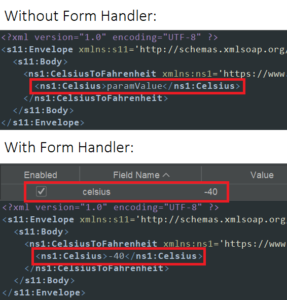

SOAP サポート
このアドオンは、SOAP エンドポイントを含む WSDLファイルをインポートおよびスキャンします。
また、
自動化フレームワーク
をサポートします
.
インポート
アドオンは、スコープ内にある限り、SOAP定義を自動的に検出してスパイダーします。
「インポート」メニューに以下の項目が追加されます：
WSDLファイルをインポート
このダイアログでは、インポートするメッセージの数を制限することができます。 値は
(デフォルトでは) すべてのメッセージがインポートされます。 インポート時にはリダイレクトが追跡されるため、これはあくまで目安に過ぎません。
ローカルファイルシステムまたはURLからWSDLファイルをインポートする操作も、APIアクション (
importFile
/
importUrl
) として利用可能です。これには、オプションの
maxMessages
パラメータが含まれます。
注意:
このアドオンのバージョン 6以降では、エンコードされたURLのみがサポートされます。
フォームハンドラーアドオンのサポート
SOAP アドオンは、フォームハンドラーアドオン経由でフィールド名に基づくデフォルトパラメーター値のオーバーライドをサポートします。 例えば、

最新のコード:
SOAP サポート
統計
このアドオンは以下の統計を管理します：
soap.urls.added: インポートされたWSDLファイルから追加されたURL (または SOAP アクション) の総数。
関連情報
アラートおよびルールの詳細
SOAP サポートアドオンのアラートおよびルールの詳細
SOAP 自動化
自動化フレームワーク対応に関する情報